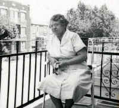
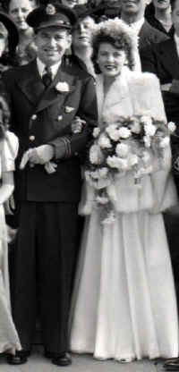
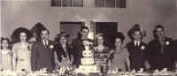
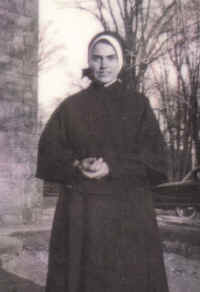
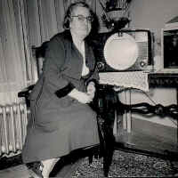
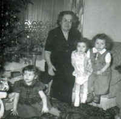
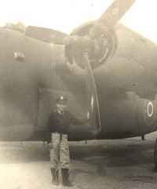
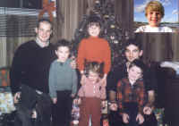
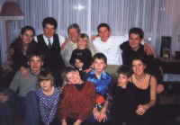
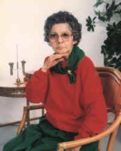

|
MARIE-ANNA, VEUVE ET
GRAND-MÈRE
Pour Marie-Anna, maintenant veuve, la vie doit continuer
avec le soutien de ses enfants, sa famille et de bonnes amies qu'elle a
depuis longtemps.
|

Des chaises d'extérieur,
plus légères et pliables, arrivent sur le marché.
Marie-Anna aime avoir les nouveaux produits modernes, en ce sens c'est
une personne "bien de son temps".
|
En 1941, Marie-Anna emménage en location
au 7965 rue St-Gérard dans un
deuxième étage. Elle y vit plusieurs années, y marie ses
enfants et continue d'y élever sa petite dernière, Ghislaine. Elle
la met pensionnaire au couvent de St-Aimé
(aujourd'hui
Massueville)dès l'âge
scolaire. C'est la règle pour une bonne éducation des
jeunes filles.
Les logements disponibles
étant peu nombreux à cette période, certains de ses
enfants habiteront chez elle quelque temps après leur
mariage.
|
|

Benoît, Lydia
Bédard et Obéline Létourneau (2 cousines de Marie-Anna),
Marie-Anna
|
Jusqu'à son mariage en 1945,
Benoît, son fils aîné, joue son rôle de soutien
auprès de Marie-Anna. C'est lui qui sert de père* à ses
frères et à sa sœur lors de leur mariage.
*dans un mariage le père du marié et de la mariée
conduisent chacun leur enfant à l'autel, acceptant ainsi de les
donner en mariage. Ce sont les principaux témoins et ils
signent l'acte de mariage avec les nouveaux époux. En
l'absence du père, un frère ou un oncle devait le remplacer.
|
|

Gérard, Ghislaine, Marie-Anna
|

Les quatre fils de
Marie-Anna
Jean-Noël, Rosaire,
Gérard, Benoît
|
| Une
autre guerre a débuté en 1939, deux des fils de Marie-Anna y participent, Gérard dans l'armée régulière et Rosaire dans l'aviation.
Jean-Noël suit aussi la formation militaire, mais la
guerre cesse avant qu'il y participe. |
LE MARIAGE DES
ENFANTS DE MARIE-ANNA
De 1941 à 1948 Marie-Anna
marie tous ses enfants sauf sa cadette Ghislaine qui est pensionnaire
durant l'année scolaire et qui choisira la vie religieuse au début des
années 1950.
|

Mariage de Thérèse, sa fille
aînée, avec Gérard Cantin le 9 octobre 1941.

|

Benoît
épouse Cécile Deneault le 31 mai 1945. Il vit avec ses
beaux-parents, d'abord à Verdun. Cécile a un magasin de
chapeaux rue Ste-Catherine et Benoît est mécanicien dans
un garage. Puis ils déménagent à St-Luc, comté St-Jean. Il y fait
construire un garage et deux logements à louer au-dessus.
|
|

Rosaire épouse
Rachel Philippe le 15 septembre 1945. Le père de Rachel
était comptable au garage de Rosario, et sa mère est une
des amies de Marie-Anna. Rosaire travaille dans
l'imprimerie. Ils vivent la majeure partie de leur vie à
Laval, Ste-Dorothée.
|

Gérard épouse
Jacqueline Consigny le 29 juin 1946. Il est démobilisé et
de retour d'Europe depuis peu. Le couple
s'installe chez la mère de Jacqueline. Gérard
fait du taxi, puis travaille pour les Postes, puis la
Ville de Montréal, tout en faisant d'autres petits
boulots.
Après un séjour de 10 ans à St-Luc, ils reviennent à
Montréal en 1967.
|
|

Jean-Noël épouse
Florence O'Brien le 17 avril 1948. Ils passent la majeure
partie de leur vie à Pont-Viau, Laval.
La mère de Florence habite avec eux de très nombreuses
années.
|

La table d'honneur
aux noces de Jean-Noël et Florence.
De gauche à droite: Ghislaine, Cécile Deneault (épouse
de Benoît), Benoît (en tant que "père" du
marié), Marie-Anna, les mariés, Irène Fafard et Thomas
Alfred O'Brien, les parents de la mariée, et George
O'Brien, son frère.
|
|

Ghislaine entre dans la
communauté religieuse de la Présentation de Marie et
prononce ses vœux le 2 février 1956.
|

Benoît, Paule sa 2ème
fille, Ghislaine, Diane fille aînée de Benoît, Michel
et Linda, enfants de Jean-Noël
|
|

De gauche à droite, Marie-Anna,
Cécile, Jacqueline, Benoît, Jean-Noël, Florence,
Gérard
|
Marie-Anna a
50 ans
le 27 avril 1947.
Ses enfants soulignent l'évènement par un souper dans un
cabaret, le "Quartier Latin", au 1177 rue
de la Montagne, où travaille Thérèse comme barmaid.
 |
|
MARIE-ANNA
ET SES FRÈRES
Jean
(nom officiel: Joseph), le frère
aîné de Marie-Anna, épouse Hélène Vilemaire, fille
d'Hormisdas et de Catherine Sarault, le 27 mai 1919 dans
la paroisse St-Zotique. Ils n'ont pas eu d'enfant. Il
travaillait dans l'imprimerie et habitait Verdun, une
belle maison cossue où l'on trouvait des souvenirs d'un
voyage de jeunesse de Jean au Japon et en Asie. Lui et son
épouse prennent un transatlantique pour un voyage en
Europe à la fin des années 50. Jean décède en 1976, et
son épouse l'année suivante.
Antonio
(nom
officiel: Antoine)
chauffeur de
taxi, a longtemps vécu maritalement avec une femme séparée
qui avait une fille (souvenir
de Ghislaine). Ce choix de vie, à cette époque, le met au
ban de la société et de sa famille. Il n'a le
droit de visiter sa famille que seul. Il n'est pas
question qu'il vienne avec sa compagne. Le divorce
n'existe pas, les enfants nés hors mariage n'ont aucun
statut légal et les couples "accotés" ne
peuvent s'afficher publiquement, les conventions sociales
l'interdisant. Ils sont une honte pour leur famille.
Antoine décède en décembre 1992.
Mise à jour le 7 avril
2007: Suite à des recherches dans le
BMS2000, nous apprenons qu'Antoine épouse Éva Lamontagne
le 6 octobre 1970, à Sherbrooke. Il s'agit sûrement de
la conjointe de fait avec laquelle il a longtemps vécu.
Éva s'était mariée une première fois à Sherbrooke en
1921 avec George Cross, originaire d'Angleterre, et avait
eu, avec lui, une fille, Lilianne. Cette dernière s'est
mariée en 1946 à Montréal.
Ainsi, Antoine et Éva se sont finalement mariés,
probablement quand cette dernière est devenue veuve,
ils avaient plus de soixante-dix ans chacun. |
|

Marie-Anna et
ses frères Jean et Antonio sont réunis le 30 mai 1945
pour le mariage de Benoît. Jean sert de "père"
à son neveu.
|

Diane, fille de Benoït, Marie-Anna, Jean Caron et
son épouse Hélène Villemaire (Tante Nelly).
|
|
UNE
FEMME MODERNE
Marie-Anna est une femme
moderne qui aime les nouveaux appareils ménagers
électriques qui facilitent la vie. Les fers à
repasser électriques et les réfrigérateurs ne se retrouvent pas
encore dans toutes les maisons dans les années 1940.
Au début des années 1950, Marie-Anna est photographiée dans son
salon devant sa première télévision. Au début des années 1960
elle a la première télévision couleur, alors qu'aucune émission
couleur n'est encore diffusée au Canada. Ces items sont, pour la
plupart, achetés aux États-Unis par ses enfants, lorsqu'ils
vont, par exemple, à New-York.
Dans les années 1950, elle se fait installer une
cabine-douche dans son logement de la rue Des Écores.
Bien des gens de cette époque n'avait même pas encore de bain,
ni d'eau chaude. |
|

|

|

|
|
|
MARIE-ANNA
GRAND-MÈRE
Dès 1946 Marie-Anna
devient grand-mère. Elle a 21 petits-enfants, et peut-être plus
car nous ne savons pas si les filles de Benoît ont eu des
enfants.
Benoît
a 3 filles, Diane, Paule, Carole.
|

Gérard a 9 enfants,
Nicole, André, Christiane, Francine, Lucie, Céline,
Martin, Denis, François. |
Rosaire
a 6 enfants, Richard, Daniel, Raynald, Christine, Jocelyn,
Ghyslyne.
|
 Jean-Noël
a 3 enfants, Michel, Linda, Jean. Jean-Noël
a 3 enfants, Michel, Linda, Jean.
Michel décède accidentellement à Vancouver en 1970.
Jean-Noël et Florence adoptent un enfant handicapé
placé en famille d'accueil chez-eux, Normand Bériault.
Cet enfant décède en 1978.
|
|

Noël 1947 Marie-Anna,
Richard (fils de Rosaire), Ghislaine
|

Noël 1948
Au premier plan, de
gauche à droite, Benoît, sa fille Diane, Richard, le
fils aîné de Rosaire.
Autour de la table, de gauche à droite, Cécile, Gérard
Cantin, Ghislaine, Marie-Anna, Gérard tenant Nicole,
Jacqueline, Rachel, Rosaire, Florence.
|

Famille Noël
1948
|
|

Noël 1950
Diane, Marie-Anna,
Nicole, Richard (?)
|

Le 7965
St-Gérard, photo prise par Ghislaine en 2003
|

Rosaire le 21
avril 1944 posant devant le "Libérateur E.W.
..." avant le départ pour les Indes.
|
|

Michel, Linda et Marie-Anna en 1953
|

Marie-Anna et
Nicole rendant visite à sa fille Ghislaine au
pensionnat

Marie-Anna, Francine, Ghislaine, Christiane,
Jacqueline
André, Lucie, Nicole
|

Marie-Anna, Gérard
Cantin, Florence, Thérèse et Linda
|
| LES
ARRIÈRE-PETITS-ENFANTS DE MARIE-ANNA |
|

Martin, petit-fils de Jean-Noël
|

Les petits-enfants de Gérard
|

Les petits-enfants de Rosaire, et Ghislaine
|
 Par
l'annuaire Lovell* de 1952, nous savons que Gérard et sa famille
s'installe au 7078 Des Écores et que sa mère Marie-Anna
déménage tout près, au 7092 rue Des Écores dans la paroisse
St-Barthélemy. Qui a suivi l'autre? Par
l'annuaire Lovell* de 1952, nous savons que Gérard et sa famille
s'installe au 7078 Des Écores et que sa mère Marie-Anna
déménage tout près, au 7092 rue Des Écores dans la paroisse
St-Barthélemy. Qui a suivi l'autre?
C'est le deuxième étage d'une résidence jouxtant au sud un bloc
de six logements dont Marie-Anna devient propriétaire l'année
suivante. Elle emménage alors dans
le logement nord du rez-de-chaussée, le 7082. En 1954,
Jean-Noël déménage à côté, au 7080. Les loyers constituent son revenu
principal.
Le 24 mai 1957 son
fils aîné Benoît décède d'un cancer généralisé. La
famille ne garde pas contact avec la veuve et les trois filles de Benoît.
À partir de l'annuaire Lovell* de 1957, nous ne trouvons plus
de traces de Marie-Anna sur la rue Des Écores, ni ailleurs. Nous
savons qu'elle en sera la propriétaire jusqu'à son décès, mais
elle n'y habite plus. Gérard non plus, il réside à St-Luc mais
continue à travailler pour la Ville de Montréal. Seul Jean-Noël
y habite jusqu'en 1960 inclusivement, suite à quoi il emménage
à Pont-Viau.
À noter que le nom de Gérard apparaît encore dans certains
annuaires, je pense que c'est parce qu'il devait fournir une
adresse à Montréal pour avoir le droit de travailler pour la
Ville. Il lui fallait aussi être un résident de Montréal pour
inscrire ses enfants à la Bibliothèque de Montréal.
Marie-Anna réside d'abord quelques
années sur le
boulevard Gouin dans une résidence pour personnes âgées dirigée
par les sœurs du Bon Conseil. Puis, à l'initiative de Gérard,
elle séjourne une très courte période chez-lui, à St-Luc. Elle est
ensuite hébergée dans un
hospice à Marieville car son état de santé se détériore. Ghislaine, sa fille cadette religieuse, vit et travaille à
proximité. Gérard visite sa mère presque chaque jour, faisant le
détour avant de se rendre à Montréal pour son travail, et ce
malgré le fait qu'il "travaillait sur des chiffres". Sa
décision de déménager sa mère a été discutable pour les
autre membres de la famille, mais il faut lui reconnaître sa
constance à visiter sa mère, et ce pendant des années.
|

Un dimanche
d'automne 1962, jour de visite à Marieville.
Au premier
plan, Marie-Anna, Mme Philippe (mère de Rachel mais aussi
amie de longue date de Marie-Anna), Ghislaine, Rachel,
Jacqueline et bébé Denis.
À noter que Mme Philippe occupe quelques années plus
tard le 7078 Des Écores, soit le logement anciennement
occupé par la famille de Gérard. Elle y reste jusqu'à
ses 100 ans. Née en 1897 comme Marie-Anna elle meurt en 2002 à l'âge de 104 ans.
|

Les enfants de
Rosaire et ceux de Gérard, visitant leur grand-mère à
Marieville, photographiés ici avec leur tante Ghislaine
|
 Marie-Anna décède à Marieville
le 8 juillet 1966, à l'âge de 69 ans, d'un cancer des intestins.
Son décès donne lieu aussi à une "chicane
d'héritage" pour plusieurs raisons, dont une mésentente sur
la vente ou non de
la propriété rue Des Écores. Après la mort de Jacqueline en
1986, les trois frères reprennent contact. Les deux sœurs
avaient toujours continué à fréquenter toute la famille. Thérèse
décède en 1994, Gérard en 1996. Marie-Anna décède à Marieville
le 8 juillet 1966, à l'âge de 69 ans, d'un cancer des intestins.
Son décès donne lieu aussi à une "chicane
d'héritage" pour plusieurs raisons, dont une mésentente sur
la vente ou non de
la propriété rue Des Écores. Après la mort de Jacqueline en
1986, les trois frères reprennent contact. Les deux sœurs
avaient toujours continué à fréquenter toute la famille. Thérèse
décède en 1994, Gérard en 1996.
|

Thérèse en 1994
|

Ghislaine, Jean-Noël, Rosaire, Gérard en 1987
|

Ghislaine
|
*
Les annuaires Lovell couvrent du 1er juillet d'une année au
30 juin de l'autre. Les données sont récoltées de porte en
porte en mai. Dans certains annuaires les propriétaires sont
identifiés par un astérisque. Le métier est souvent inscrit,
ainsi que l'employeur. On peut faire des recherches par le nom de
la personne, ou par l'adresse. Ils sont disponibles sur le site
des Archives
Nationales.


Fin de la rubrique sur
Marie-Anna Caron.
|
|
|